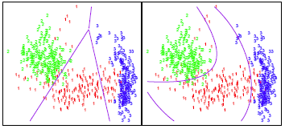

Section 11 Generative Models for Classification
/**/
Why do we need another method, when we have logistic regression? There are several reasons:
When there is substantial separation between the two classes, the parameter estimates for the logistic regression model are surprisingly unstable. The methods that we consider in this section do not suffer from this problem.
If the distribution of the predictors X is approximately normal in each of the classes and the sample size is small, then the approaches in this section may be more accurate than logistic regression.
The methods in this section can be naturally extended to the case of more than two response classes. (In the case of more than two response classes, we can also use multinomial logistic regression.)
Suppose that we wish to classify an observation into one of \(K\) classes, where \(K ≥ 2\). Then Bayes’ theorem states that:
\[ \Large \Pr(A|B)=\frac{\Pr(B|A)\Pr(A)}{\Pr(B|A)\Pr(A)+\Pr(B|\neg A)\Pr(\neg A)} \]
In the following sections, we discuss three classifiers that use different estimates of \(f_k(x)\) to approximate the Bayes classifier: 1. linear discriminant analysis 2. quadratic discriminant analysis 3. naive Bayes
11.1 Linear Discriminant Analysis
a. When \(p\) = 1
For now, assume that \(p\) = 1—that is, we have only one predictor. We will then classify an observation to the class for which pk(x) is greatest. To estimate \(f_k(x)\), we will first make some assumptions about its form: In particular, we assume that \(f_k(x)\) is normal or Gaussian.
In practice, even if we are quite certain of our assumption that \(X\) is drawn from a Gaussian distribution within each class, to apply the Bayes classifier we still have to estimate the parameters \(\mu_1, . . . ,\mu_K\), \(\pi_1, . . . ,\pi_K\), and \(\sigma^2\). The linear discriminant analysis (LDA) method approximates the Bayes classifier by plugging estimates for \(\pi_k, \mu_k\), and \(\sigma^2\).
To reiterate, the LDA classifier results from assuming that the observations within each class come from a normal distribution with a class-specific mean and a common variance \(\sigma^2\), and plugging estimates for these parameters into the Bayes classifier.
b. When \(p\) > 1
We now extend the LDA classifier to the case of multiple predictors. To do this, we will assume that \(X = (X_1,X_2, . . . ,X_p)\) is drawn from a multivariate Gaussian (or multivariate normal) distribution, with a class-specific mean vector and a common covariance matrix.
The multivariate Gaussian distribution assumes that each individual predictor follows a one-dimensional normal distribution.
c. Problems with LDA
d. Confusion Matrix
A confusion matrix is a summarized table of the number of correct and incorrect predictions (or actual and predicted values) yielded by a classifier (or classification model) for binary classification tasks.
In simple words, “ A confusion matrix is a performance measurement for machine learning algorithm”.
By visualizing the confusion matrix, an individual could determine the accuracy of the model by observing the diagonal values for measuring the number of accurate classification.

Figure 11.1: A sample 2x2 confusion matrix
see figure 11.1
i. True Positive, True Negative, False Positive and False Negative
true positive
is an outcome where the model correctly predicts the positive class,
true negative
is an outcome where the model correctly predicts the negative class.
false positive (Type I Error)
is an outcome where the model incorrectly predicts the positive class when the actual class is negative.
false negative (Type II Error)
is an outcome where the model incorrectly predicts the negative class when the actual class is positive.
ii. Precision
Precision explains how many correctly predicted values came out to be positive actually. Or simply it gives the number of correct outputs given by the model out of all the correctly predicted positive values by the model.
It determines whether a model is reliable or not. It is useful for the conditions where false positive is a higher concern as compared to a false negative. For calculating the precision, the formula is:
\[ \Large \Large Precision = \frac{TP}{TP+FP} \]
iii. Recall
Recall describes how many of the actual positive values to be predicted correctly out of the model. It is useful when false-negative dominates false positives. The formula for calculating the recall is
\[ \Large Recall = \frac{TP}{TP+FN} \]
Increasing precision decreases recall and vice versa, this is known as the precision/recall tradeoff.
iv. Accuracy
One of the significant parameters in determining the accuracy of the classification problems, it explains how regularly the model predicts the correct outputs and can be measured as the ratio of the number of correct predictions made by the classifier over the total number of predictions made by the classifiers. The formula is
\[ \Large Accuracy = \frac{TP+TN}{TP+TN+FP+FN} \]
v. F-Measure
For the condition when two models have low precision and high recall or vice versa, it becomes hard to compare those models, therefore to solve this issue we can deploy F-score.
::tip “F-score is a harmonic mean of Precision and Recall”. :::
By calculating F-score, we can evaluate the recall and precision at the same time. Also, if the recall is equal to precision, The F-score is maximum and can be calculated using the below formula
\[ \Large F-measure = \frac{2 \times Recall \times precision}{Recall + Precision} \]
vi. ROC curve
The ROC curve is a popular graphic for simultaneously displaying the two types of errors for all possible thresholds.
Figure 11.2: A ROC curve for the LDA classifier on the Default data
Figure above displays the ROC curve for the LDA classifier on the training data. The overall performance of a classifier, summarized over all possible thresholds, is given by the area under the (ROC) curve (AUC). An ideal ROC curve will hug the top left corner, so the large area under the (ROC) curve the AUC the better the classifier. For this data the AUC is 0.95, which is close to the maximum of one so would be considered very good.
11.2 Quadratic Discriminant Analysis
Quadratic discriminant analysis (QDA) provides an alternative approach. Like LDA, the QDA classifier assumes that the observations from each class of Y are drawn from a Gaussian distribution. However, unlike LDA, QDA assumes that each class has its own covariance matrix.
In other words, the predictor variables are not assumed to have common variance across each of the \(k\) levels in \(Y\). Mathematically, it assumes that an observation from the \(k\)th class is of the form, where is a covariance matrix for the \(k\)th class. Under this assumption, the classifier assigns an observation to the class for which is largest.
Why is this important?
Consider the image below. In trying to classify the observations into the three (color-coded) classes, LDA (left plot) provides linear decision boundaries that are based on the assumption that the observations vary consistently across all classes. However, when looking at the data it becomes apparent that the variability of the observations within each class differ. Consequently, QDA (right plot) is able to capture the differing covariances and provide more accurate non-linear classification decision boundaries.
